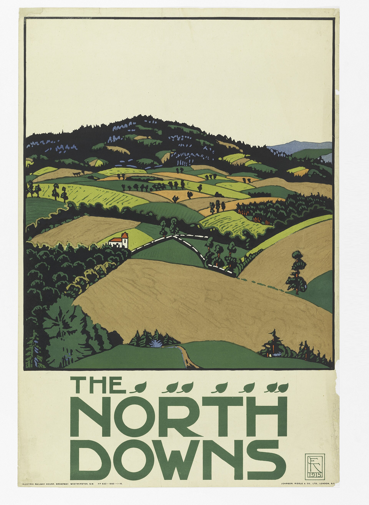
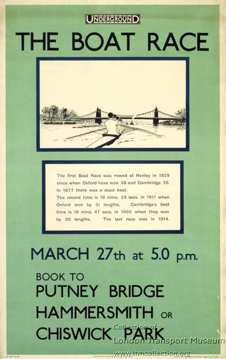

Adapted version · dyslexia and neurodiverse students · B1
Session 5: Posters: selling the city
Question: How did the Underground sell London to Londoners?
Goals
- Analyse a poster
- Use the language of persuasion
Warm-up
What makes you want to go somewhere? A picture, a slogan, a price?
Read


The soonest reached at any time. Golders Green. A place of delightful prospects.Text of an Underground poster, 1908.



The test of the goodness of a thing is its fitness for use. If it fails on this first test, no amount of ornamentation or finish will make it any better; it will only make it more expensive, more foolish.Frank Pick, publicity officer and later chief executive of the Underground.
Tasks
Task a. Describe the Golders Green poster: place, people, colours, slogan.
Task b. What promise does the poster make?
Task c. Compare it with the posters of 1915 by Edward McKnight Kauffer.
Task d. Which poster would make you take the Tube? Why?
Sentence starters
- The poster shows...
- The slogan promises...
- The colours suggest...
- This poster is persuasive because...
Role play
An advertising team in 1915 pitches a poster to Frank Pick.
Gap-fill worksheet
Word bank: prospects · Kauffer · use
- Golders Green is a place of delightful .
- Edward McKnight designed the Godstone poster.
- Pick wanted fitness for .
Answer key
- prospects
- Kauffer
- use
Homework
Design a poster for a station you like, with a slogan.
Assessment grid
| Criteria | Level 1 | Level 2 | Level 3 | Level 4 |
|---|---|---|---|---|
| Content | Few ideas | Some ideas | Clear ideas | Rich, precise ideas |
| Language | Many errors | Some errors | Mostly correct | Accurate and varied |
| Interaction / organisation | Little | Basic | Good | Fluent and natural |